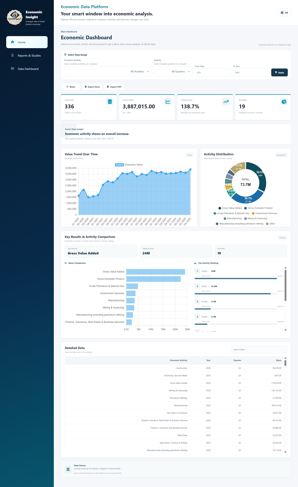
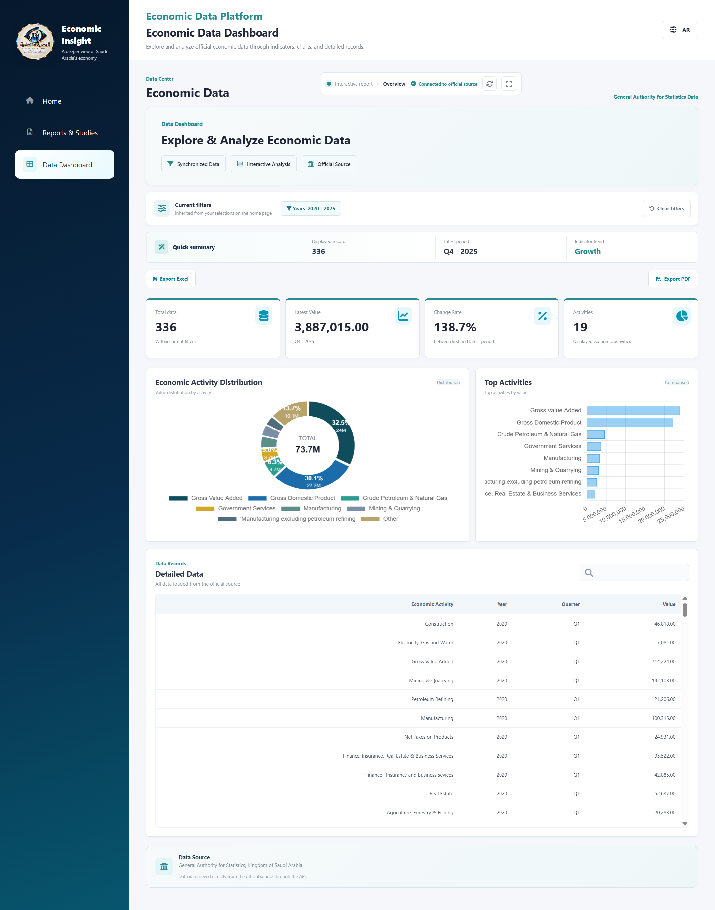
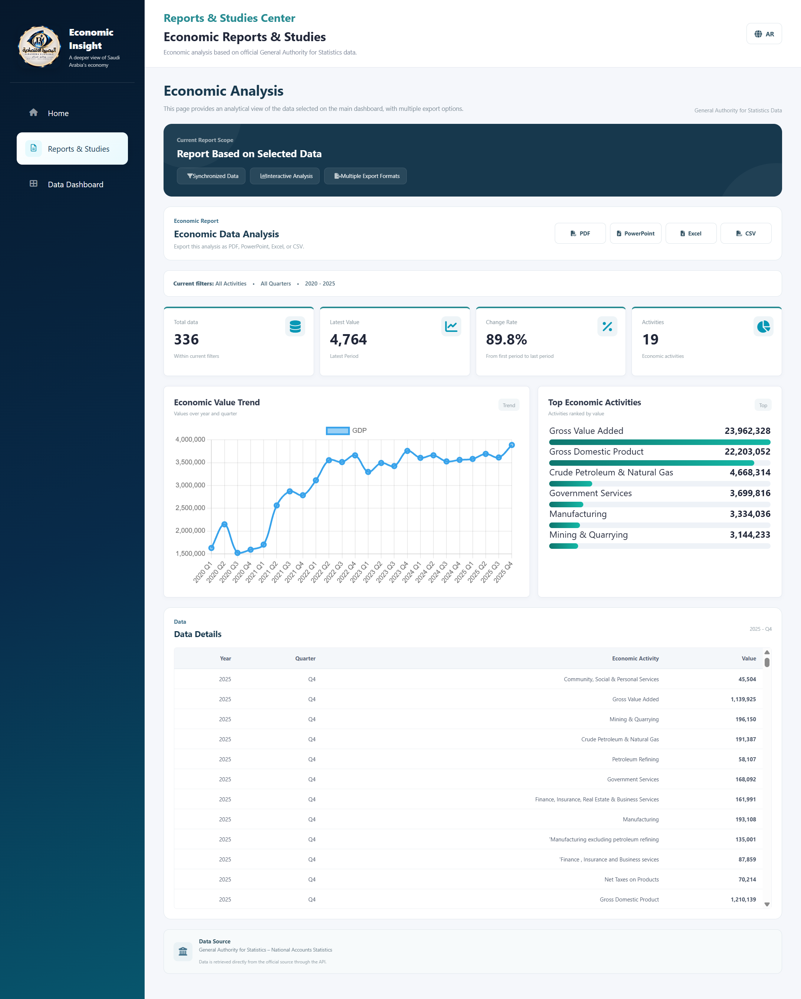
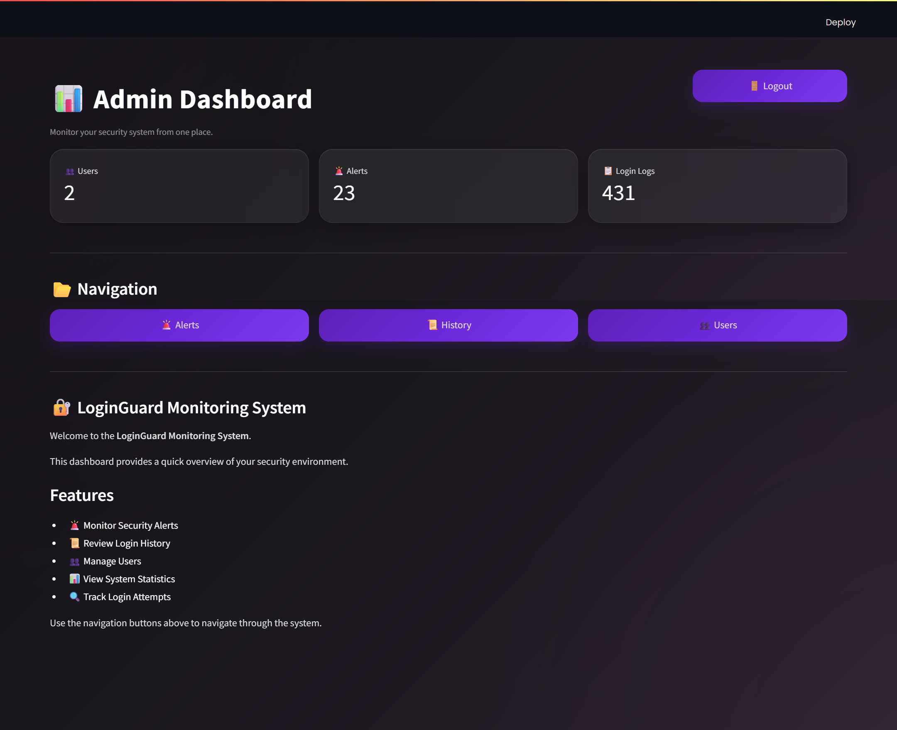

My Projects
Al-Basirah Economic
Al-Basirah Economic is a data-driven economic analysis and reporting project focused on market research, feasibility assessment, KPI tracking, and strategic decision support. It was developed as part of a professional graduation project to present economic insights through organized analysis and clear reporting.



Cybersecurity Risk Management System
A web-based Cybersecurity Risk Management System developed to help organizations assess, monitor and mitigate cybersecurity risks while aligning with NCA-ECC-2:2024.
 View Project on GitHub
View Project on GitHub
LoginGuard
LoginGuard is a cybersecurity-focused web application built with Python and Streamlit to monitor authentication activities and enhance account security. The system detects suspicious login behavior, automatically locks compromised accounts after repeated failed attempts, records login events, generates real-time alerts, and provides administrators with an interactive dashboard for monitoring users and security events. It uses SQLite for data management and Pandas for data processing and reporting.

View Project on GitHubAlertLens
AlertLens is a web-based cybersecurity platform designed to help users monitor security alerts, analyze potential threats, and improve cybersecurity awareness through an intuitive and responsive interface.